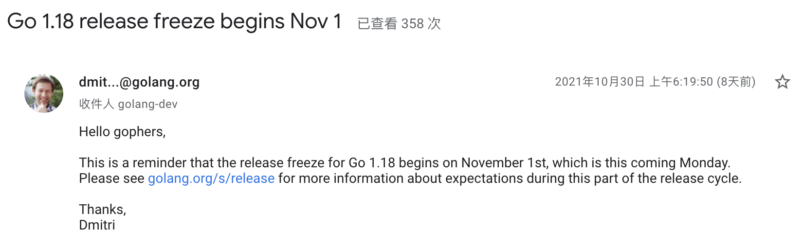
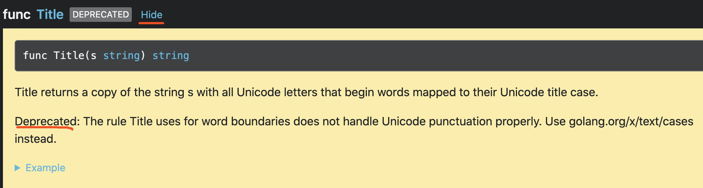

Go1.18 快讯：废弃了这个 API
大家好，我是 polarisxu。
从 11 月 01 日起，Go1.18 就冻结了，也就是 1.18 的功能已经确定。

今天介绍一个 Go1.18 废弃的 API，同时介绍响应的替代 API。
01 strings.Title 被废弃
查看 go tip 标准库文档，发现 strings.Title 被标识为 deprecated：https://pkg.go.dev/strings@master，而且该 API 的文档默认被折叠了。

pkg.go.dev 针对废弃的 API 使用了不一样的样式。
该 API 是干什么的？为什么会被标识为废弃？
看一个例子就知道 strings.Title 的作用了：
package main
import (
"fmt"
"strings"
)
func main() {
fmt.Println(strings.Title("her royal highness"))
fmt.Println(strings.Title("loud noises"))
fmt.Println(strings.Title("хлеб"))
}
输出：
Her Royal Highness
Loud Noises
Хлеб
可见，strings.Title 会将每个单词的首字母变成大写字母。
strings 中还有一个函数：ToTitle，它的作用和 ToUpper 类似，所有字符全部变成大写，而不只是首字母。不过 ToTitle 和 ToUpper 的区别特别微小，Stackoverflow 上有相关讨论 ，它们的区别是 Unicode 规定的区别。
那 strings.Title 为什么废弃呢？strings.Title 的规则是使用单词边界，不能正确处理 Unicode 标点。
比如下面的代码：
fmt.Println(strings.Title("here comes o'brian"))
期望输出：Here Comes O'brian，但 strings.Title 的结果是：Here Comes O'Brian。
02 golang.org/x/text/cases 包
在 strings.Title 中提到，可以使用 golang.org/x/text/cases 代替 strings.Title，具体来说就是 cases.Title。
该包提供了通用和特定于语言的 case map，其中有一个 Title 函数，签名如下：
func Title(t language.Tag, opts ...Option) Caser
第一个参数是 language.Tag 类型，表示 BCP 47 种语言标记。它用于指定特定语言或区域设置的实例。所有语言标记值都保证格式良好。
第二个参数是不定参数，类型是 Option，这是一个函数类型：
type Option func(o options) options
它被用来修改 Caser 的行为，cases 包可以找到相关 Option 的实例。
cases.Title 的返回类型是 Caser，这是一个结构体，这里我们只关心它的 String 方法，它接收一个字符串，并返回一个经过 Caser 处理过后的字符串。
所以，针对上文 strings.Title 的场景，可以改为 cases.Title 实现。
caser := cases.Title(language.English)
caser.String("here comes o'brian")
得到的结果是：Here Comes O'brian。
03 总结
Go 语言很强的地方之一就是它的标准库。其实除了标准库，golang.org/x 相关库也是一个大宝藏，需要什么功能，如果标准库没有，可以优先看看 golang.org/x 有没有提供相关库。后续我也会不断介绍 golang.org/x 一些库的用法。